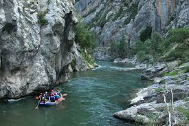
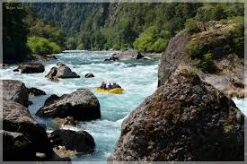
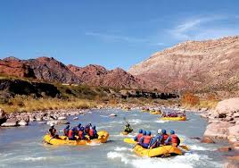

With over 30 years of experience on the water, we are leaders in the rafting industry. Our expert and passionate team guarantees you an unforgettable and safe experience in the most impressive rivers. Book now and experience the excitement of rafting with us. Contact us to learn more and plan your next adventure."
The best rafting experience
Are you ready for an unforgettable adventure? Join us on an exciting and fun journey through the most impressive rivers!, Capture unforgettable moments in photos and videos share the emotion with friends and family

While many nature enthusiasts expect to see wildlife during river trips, the frequency and proximity of these encounters can be surprisingly high. Rivers are vital ecosystems that support a diverse range of flora and fauna. Overnight trips often take you through remote areas, increasing the chances of seeing wildlife in their natural habitat. You might wake up to the sight of deer or Big horned Sheep drinking at the water’s edge, observe otters playing as you paddle by, or even catch a glimpse of a majestic eagle soaring overhead. The sounds of the river at night—frogs croaking, and owls hooting—can be both eerie and enchanting. These close encounters with wildlife add a magical element to the trip that is often unexpected and deeply memorable.

Another surprising aspect of overnight river trips is the necessity of embracing minimalism. Space is limited, and everything you bring must be packed in waterproof containers and secured to prevent loss or damage. This restriction forces you to carefully consider what is truly essential, promoting a simpler, more mindful approach to packing. You’ll learn to appreciate the basics: a reliable tent, a good sleeping bag, and cozy sleeping pad. Meals are outrageously delicious, prepared with fresh ingredients and properly prepared by our master chefs/guides. This minimalist, but luxurious lifestyle can be a refreshing change from the complexity of everyday life, teaching you to value functionality, while being well looked after.

One of the most rewarding yet surprising aspects of an overnight river trip is the sense of community that develops among participants. Whether you’re traveling with friends, family, or joining a guided group, the shared experience of navigating the river and camping together fosters strong bonds. Evenings spent around camp, sharing stories and laughter, create lasting memories and deepen connections. Working together to overcome challenges, such as difficult rapids, builds camaraderie and trust. This sense of community is often one of the most cherished aspects of the trip. In addition, the opportunity to disconnect from technology and social media allows for more genuine interactions. Without the distractions of modern life, conversations become more meaningful, and you become more attuned to the people around you. This reconnection with others, and with yourself, can be one of the most surprising and fulfilling parts of an overnight river trip.